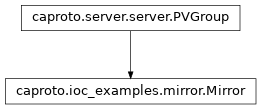

caproto.ioc_examples.mirror.Mirror¶

-
class
caproto.ioc_examples.mirror.Mirror(*args, target, **kwargs)[source]¶ Subscribe to a PV and serve its value.
The default prefix is
mirror:.Mirror pvproperties¶ Attribute
Suffix
Docs
Type
Notes
Alarm Group
value
valuefloat
Read-only Startup
Methods
group_read(instance)Generic read called for channels without get defined
group_write(instance, value)Generic write called for channels without put defined
Attributes
default_valuestype_maptype_map_read_onlypvproperty methods
-
value.startup(self, instance, async_lib)¶
Source code: value.startup
34 35 36 37 38 39 40 41 42 43 44
@value.startup async def value(self, instance, async_lib): # Note that the asyncio context must be created here so that it knows # which asyncio loop to use: self.client_context = Context() self.pv, = await self.client_context.get_pvs(self.target) # Subscribe to the target PV and register self._callback. self.subscription = self.pv.subscribe(data_type='time') self.subscription.add_callback(self._callback)
-